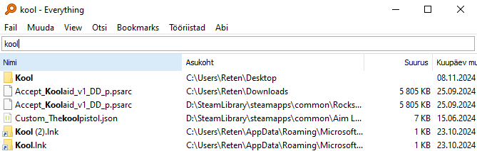
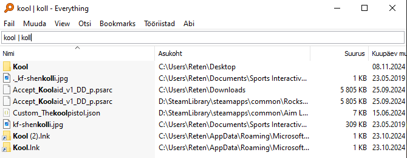
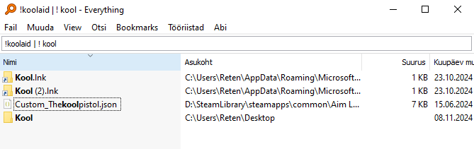
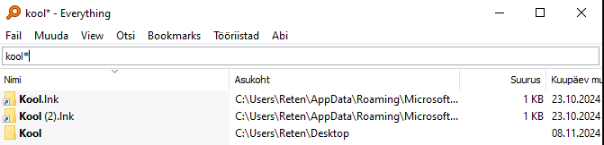
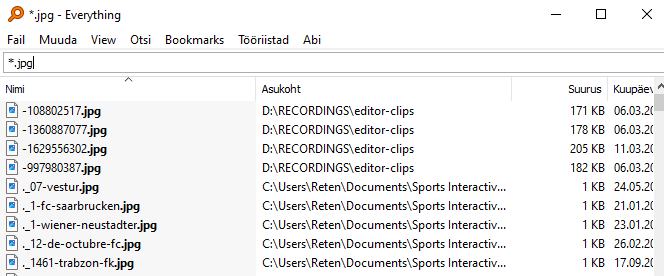

Probleemiks on liigsete failide olemasolu ja failide keerukas/aeganõudev otsimine.
Rakendus on failide otsingumootor aga palju efektiivsem kui windowsi oma.
Ta leiab üles kaustad üles koheselt ega ei pea enam ootama pikka laadimist.
Selle kasutamine on ÜLI LIHTNE.
| EVERYTHING | |
| KASUTAMINE | PILT |
| Kirjuta märksõna otsinguribale ja koheselt annab sulle vastuse. |  |
| Kahe erineva sõna otsimine. Kasuta sõnade eraldamiseks | |
 |
| Sõna eemaldamine otsingust kasuta ! Pildil on näidatud kuidas eemaldada üks sõna teise sõna otsingust Esimene sõna eemaldatakse otsingust ja teist sõna otsitakse. |
 |
| Kindla sõna leidmiseks kasuta tärni * |  |
| Kindla faili tüübi leidmiseks kasuta tärni * aga sõna ees |  |